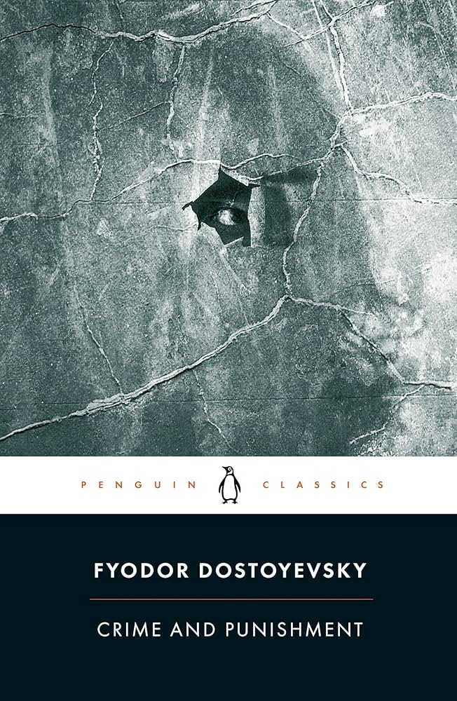

Crime & Punishment blog #2
By Omar Andre

Summary
I am currently 1/4 of the way through the book. Here's a quick list of what has happened from the beginning of the book:
- Our protagonist, Rodya Raskolikov, is a very poor student.
- Rodya goes to an old lady for pawning and contemplates an unamed crime, which we later learn is murder.
- Rodya is repulsed by his own idea, but still contemplates it.
- We learn Rodya is bananas.
- Rodya doesn't really like most people, but right after this scene he gets the urge to go to a bar.
- Rodya meets a very drunk guy and goes to his house, then gives them money. <-- Blog #1.
- Rodya immediately regrets his goodwill (pattern happens throughout the novel).
- Rodya gets a letter from his mother that his sister, Dounia, is getting married to a business man so that Rodya could get a job and stuff.
- Rodya doesn't like this idea.
- Both Rodya and her mother are quite entitled, and think of themselves as some kind of rich people in an unfair poor phase.
- Rodya's "dream" is that he could kill the pawnbroker and take her money to benefit other people and this benefit would outweigh his "sin".
- Rodya renounces his "dream".
- Rodya immediately goes back on his renouncing and commits the murder while in a delirium (might be an unreliable narrator in this part?)
- Rodya also killed the pawnbroker's sister, which wasn't part of the plan. Other than that everything went great and he probably didn't leave any traces.
- Rodya is like even more bananas and paranoid now.
- Rodya got summoned to pay his outrageous debt to his landlady.
- Rodya promised his landlady to marry her daughter, but the daughter died.
- Rodya visited his friend while in a delirium then went back and fell into an even worse delirium for multiple days.
- His friend took care of him while in the coma. <-- Blog #2
Blog
Rodya
The thing that stood out the most about this part of the book is how crazy Rodya is. The main question this book seems to ask is: 'Is Rodya right about his "dream"'. But that question is kind of thrown out the window when Rodya is so crazy he doesn't even remember (supposedly) why he did it. I'm sure it will come back at some point to be contemplated, but right now the story seems to be more about Rodya himself than his crime and theory. This does post the question, what is the author trying to say through this focus?
I don't really know to be honest, and I'm not sure if it's because of where the book is at or because I'm missing something. Rodya just seems too weird to represent something, it feels like he's just there for the sake of the narrative rather than a representation of something bigger. Rodya is quite clearly mentally ill in some way; it's quite evidently worse when he's alone. The first example of this is when he encounters a drunk teenager in the middle of the street. He's immediately concerned and helps her as much as he can, even goes as far as giving money to a policeman nearby so he can call her a cab. That's what a normal, decent person would do, I think; but as soon as he turns around to leave, he regrets helping the teenager. He reasons that it's too late for her, her life is already set, no matter what they do, she is destined to a short life: "again the hospital... drink... the taverns... and more hospital, in two or three years--a wreck, and her life over at 19 or nineteen....". He yells at the policeman to leave the girl alone and then regrets giving them money. Even as he says this, he doesn't fully think this way: "In spite of those strange words he felt very wretched". This dichotomy between his very cold, logical thoughts and his "real" feelings repeats throughout the novel, and it's a very central point of focus of "the crime".
Crimes
"Why are so many criminals caught?" Rodya asks himself at one point; He comes to "Many conclusions", but shares one: He thinks that criminals are caught because their crimes are always on a whim, based on emotions, but if he did it, he would be different, he would do it for a reason, a noble one, even, and so it would be a perfect and righteous crime. But it wasn't so, his crime, too, was on a whim. What does this mean? Is Rodya right about all criminals? I don't think so, at least not at this point. Rodya is very socially isolated, and his theory could just be him not being able to have empathy, him not understanding other people and therefore coming up with a theory that only applies to himself. Or he could be absolutely right in everything but the fact that he's different. He does think himself different, better than other people. I would like for Rodya to stop his extreme delusions and start reflecting on his crime, maybe then he'll say something that clarifies this.
Closing thoughts
I am really enjoying this novel; I think it poses interesting questions and I'm excited to find out more. I'm especially interested in finding out if the author thinks Rodya is right, what the superstitions mean, and in general I would like for Rodya to get out of his intense delirium and have him actually reflect on his crime instead. I give the novel up until now a 4.5/5.